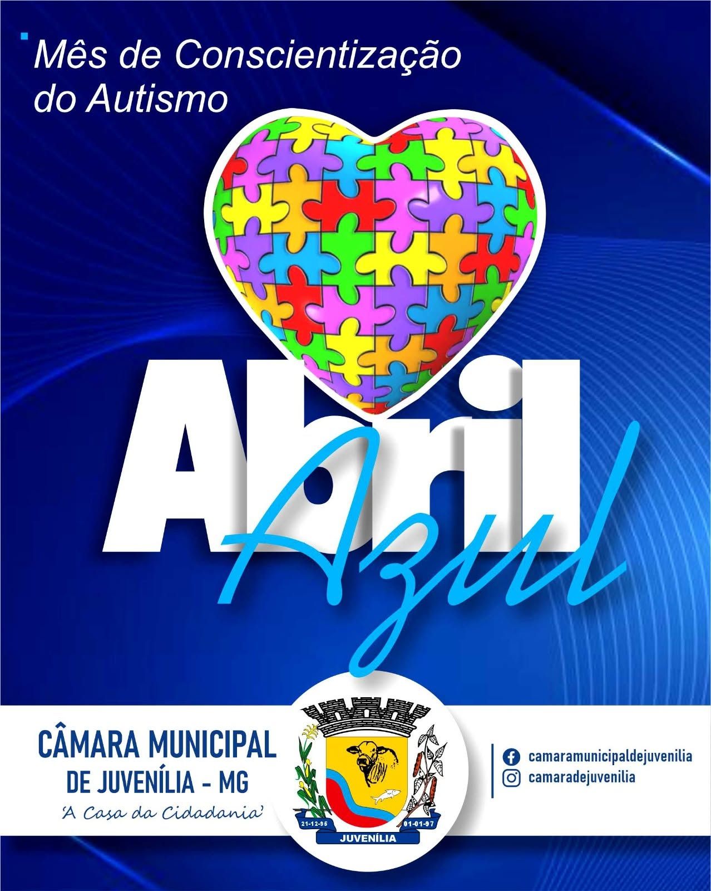

01 / TRABALHO VISUALExemplo de Arte 1
PORTFÓLIO INDEPENDENTE · 2026
DESENVOLVIMENTO WEB & CRIATIVIDADE DIGITAL
JOHNMCART / ESTÚDIO CRIATIVOED. 2026
JOHNMCART
PORTFLIO/ 26
Eu crio enquanto falo!
Sou estudante de Informática para Internet, com foco em desenvolvimento front-end e experiência prática em projetos web, sistemas e acessibilidade digital. Gosto de unir funcionalidade, organização e cuidado visual.
01 — EXPERIMENTOS VISUAIS / DIREÇÃO DE ARTE
Feito para ser visto.
Design gráfico, peças digitais e experimentos visuais. As artes são exibidas por inteiro; clique em uma peça para abri-la em tamanho maior.
GALERIA DE TRABALHOSCLIQUE EM UMA ARTE PARA AMPLIAR
 ARTE
ARTE
02 / TRABALHO VISUALExemplo de Arte 2
 ARTE
ARTE
03 / TRABALHO VISUALExemplo de Arte 3
 ARTE
ARTE
04 / TRABALHO VISUALExemplo de Arte 4
 ARTE
ARTE
05 / TRABALHO VISUALExemplo de Arte 5
 ARTE
ARTE
06 / TRABALHO VISUALExemplo de Arte 6
 ARTE
ARTE
07 / TRABALHO VISUALExemplo de Arte 7

ARTE08 / TRABALHO VISUALExemplo de Arte 8
 ARTE
ARTE
09 / TRABALHO VISUALExemplo de Arte 9
 ARTE
ARTE
10 / TRABALHO VISUALExemplo de Arte 10
 ARTE
ARTE
11 / TRABALHO VISUALExemplo de Arte 11
 ARTE
ARTE
12 / TRABALHO VISUALExemplo de Arte 12
 ARTE
ARTE
13 / TRABALHO VISUALExemplo de Arte 13
 ARTE
ARTE
14 / TRABALHO VISUALExemplo de Arte 14
 ARTE
ARTE
15 / TRABALHO VISUALExemplo de Arte 15
16 / TRABALHO VISUALExemplo de Arte 16
 ARTE
ARTE
17 / TRABALHO VISUALExemplo de Arte 17
 ARTE
ARTE
18 / TRABALHO VISUALExemplo de Arte 18
19 / TRABALHO VISUALExemplo de Arte 19
 ARTE
ARTE
20 / TRABALHO VISUALExemplo de Arte 20
Uma seleção de trabalhos visuais. As peças são exibidas por inteiro, preservando suas proporções originais.
01 — PROJETOS EM DESTAQUE
Projetos.
Projetos acadêmicos e pessoais em que transformo ideias em soluções digitais.
SEGA.
ACADEMIC MANAGEMENT
SEGA — Gestão Acadêmica
01Sistema acadêmico voltado à organização de informações de estudantes, professores, cursos, turmas, avaliações e notas.
Ver repositóriopaginário.
Paginário
02Projeto de biblioteca digital para organizar livros e informações por meio de uma interface web e estrutura de dados.
A11Y para Todos
03Experiência educativa sobre acessibilidade digital, com conteúdo interativo, quiz, jogo e orientações relacionadas às diretrizes WCAG.
Ver repositório ↗DO ECA
Guardiões do ECA
04Jogo educativo criado no Scratch para abordar os direitos de crianças e adolescentes, incentivando reflexão, empatia e cidadania.
PROJECT 05 / PRODUCTIVITY
today.
Planejador diário
05Projeto de planejamento e gestão do tempo, concebido para reunir tarefas, hábitos, metas, calendário e técnica Pomodoro.
Link do repositório a adicionar
PROJECT 06 / IOT
SMART IRRIGATION / ESP32
Monitoramento de solo
06Experimento de automação com ESP32 para monitorar a umidade do solo e acionar um relé conforme um limite definido.
Link do repositório a adicionar02 — TECHNICAL TOOLKIT
Habilidades.
Tecnologias e práticas exploradas em estudos e projetos. Minha prioridade é aprender, aplicar e evoluir.
Linguagens de programação
Fundamentos de programação e aplicação em exercícios e projetos de desenvolvimento.
Desenvolvimento web
Criação e estilização de páginas e interfaces para a web, considerando estrutura e responsividade.
Frameworks e plataformas
Ferramentas para desenvolver aplicações e gerenciar conteúdo em projetos web.
Banco de dados
Organização de dados, consultas e integração com aplicações.
Ferramentas de desenvolvimento
Ambientes de desenvolvimento, versionamento, modelagem e criação de projetos interativos.
Design e multimídia
Com o passar dos anos, fui explorando ferramentas e me aprofundando cada vez mais. Tenho bastante experiência com Photoshop e Illustrator, que me ajudam a transformar ideias em imagens e movimento. Canva e CapCut são aliados na criação de conteúdo ágil, enquanto o Figma me ajuda a trabalhar com interfaces e experiência do usuário. Também utilizo essas ferramentas para expressar diferentes ideias e linguagens visuais.
Produtividade
Uso de ferramentas de escritório para elaborar documentos, planilhas e apresentações.
Acessibilidade e tecnologia criativa
Interesse em experiências digitais inclusivas e projetos interativos com software e hardware.
Os níveis de familiaridade variam entre as tecnologias. As informações refletem estudos e experiências em projetos, não certificações profissionais.
03 — THE PERSON BEHIND THE CODE
Curiosidade move.
Prática constrói.
Sou estudante do curso Técnico em Informática para Internet no IF Baiano — Campus Guanambi. Tenho interesse em desenvolvimento web, construção de sistemas e design de interfaces. Gosto de aprender colocando a mão na massa, investigando problemas e transformando ideias em projetos funcionais.
Também valorizo a comunicação, a organização, a criatividade e o trabalho em equipe. Busco uma oportunidade de estágio ou início de carreira para contribuir, aprender com profissionais da área e desenvolver experiência em projetos reais.
ALÉM DO CÓDIGO
♫
Música e piano
Interesse por música, expressão artística e aprendizado musical.
✳
Olimpíadas do conhecimento
Interesse por desafios intelectuais, especialmente em ciências e física.
04 — LEARNING JOURNEY
Formação.
Minha trajetória de aprendizagem, construída entre a formação técnica e os projetos práticos.
FORMAÇÃO TÉCNICA INTEGRADA
Técnico em Informática para Internet
IF Baiano · Campus Guanambi
Conclusão prevista para dezembro de 2026
CURSO EM VÍDEO
Curso de Algoritmo
Fundamentos de lógica de programação e algoritmos.
CURSO EM VÍDEO
Curso de PHP Moderno
Fundamentos de desenvolvimento com PHP.
FUNDAÇÃO BRADESCO · 48 HORAS
Office na Prática
Word, Excel e PowerPoint.
Certificados e conquistas
Certificados de cursos e olimpíadas do conhecimento podem ser adicionados aqui futuramente, em uma área secundária.
05 — LET'S CONNECT
Vamos construir
algo interessante.
Estou aberto a oportunidades de estágio, primeiro emprego e colaboração em projetos. Se quiser conversar sobre tecnologia, ideias ou trabalho, entre em contato.
Enviar um e-mail ↗